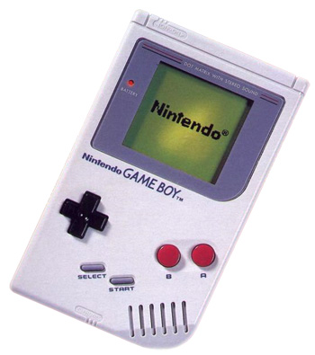
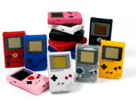

La première console portative

Tout le monde adore le Game Boy. Avec une si grande puissance contenue dans un si petit boîtier, cette petite console révolutionna le jeu vidéo à sa sortie au Japon en
1989. Depuis lors, cette console de poche a été vendue à plus de 100 millions d'exemplaires, offrant aux joueurs du monde entier la possibilité de jouer à leurs jeux
favoris, quel que soit l'endroit où ils se trouvent.
Plusieurs tailles et couleurs

À ses débuts, le Game Boy était uniquement disponible en gris et blanc. C'est à l'arrivée des années 90 que la gamme de couleur du Game Boy se diversifie. En 1997,
Nintendo fit un pas de plus en diminuant les dimensions du Game Boy pour créer la série Game Boy Pocket. Mais quelles que soient ses apparences, la principale vocation du
Game Boy reste d'offrir aux joueurs des montagnes de plaisir en prenant le moins de place possible.